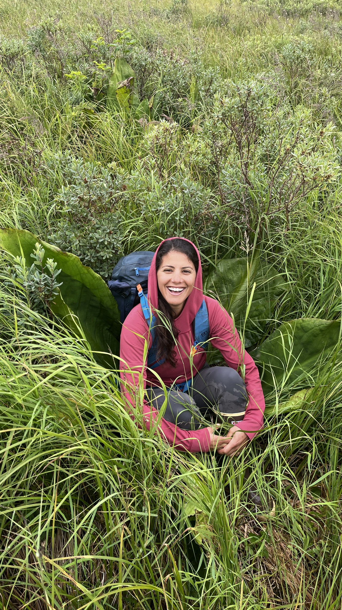

Hi! I'm Shira, a cartographer and geospatial storyteller based in Eagle River, Alaska. I work across mapping, data visualization, and geospatial design, both professionally and through freelance projects. I post most of my work on LinkedIn. Have a project in mind? I'd love to hear about it. When not making maps, you can find me running and climbing around the Chugach.